Landscape · Layered landscape, refined type
Correct terracotta-left/light-right overlap and partial olive foreground. Circular sun follows numeral scale; wide scenes join smoothly at the base, and tall scenes keep low rolling hills. Peach surface light, restrained pigment variation and more substantial Cormorant lining numerals.


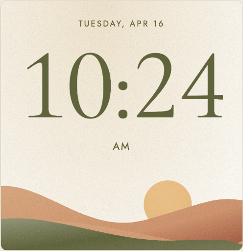

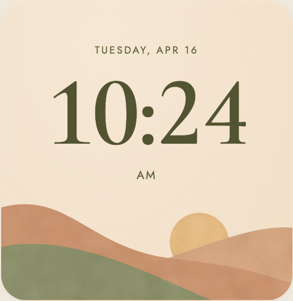
Remaining visible differences: Sky is smoother and slightly more cream/yellow; pigment is coarser, rim quieter, some dates stronger. Tall remains airy. Acceptance is scoped and does not mean exact duplication.
Flip · Constructed plates and a painted corner
Centered olive plates with pale rim, shallow depth, fine dark/light seam and olive hinges. Quiet face variation replaces the diagonal band. A branching sprig, rounded ceramic pear vase and distinct wood top/front planes give the corner real silhouette and contact. Functional date stays secondary.

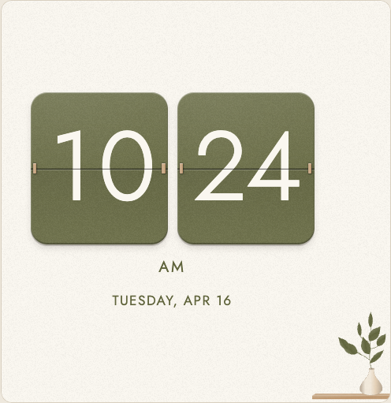

Remaining visible differences: The 1 flag is wider, some leaves broader, shelf/vase slightly fuller and panel mottling quieter. Functional date moves the pair lower than the concept. Acceptance is scoped and does not mean exact duplication.
Botanical · Sturdy numerals and five curved leaves
Locally bundled Lora gives Botanical broad rust serif numerals. AM scales separately from date. A varied, attached five-leaf sprig replaces the repeated ladder. The inset diagonal wash remains pale, with a continuous lower-right wash. Medium/full foliage clears the last digit; wide AM stays visible.

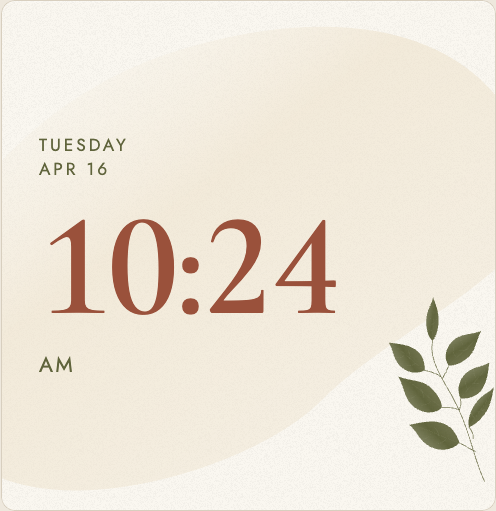

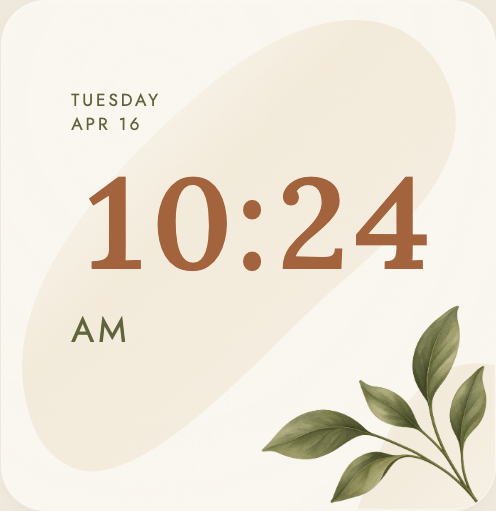
Remaining visible differences: Wash is more regular/narrow; the 2 terminal is rounder and leaf veins more pronounced. Responsive proportions vary intentionally. Acceptance is scoped and does not mean exact duplication.
Every reviewed widget shape
Compare the same layout before and after. The shapes come from actual modular grid settings at 1280×720 CSS; saved grid fractions remain independent of screen resolution. Pixel dimensions below are the actual crops, including fractional-grid rounding.
Open all 21 current native captures


Six light/dark pairs
Each critic inspected all twelve medium theme variants for its clock. Decoration keeps its warm illustrated colors while live elements adapt to the palette. This is a separate presentation gate, not a claim about every size/theme combination.

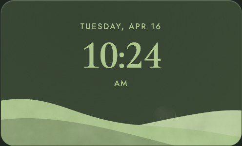
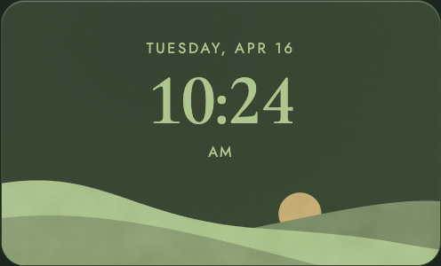
Flip’s actual minute change
The two halves fold at the seam, with a small settling movement. Only changed digits animate; reduced motion, hidden widgets and clock jumps cancel animation. These are 42 sampled points of the browser’s actual animation timeline, not an animation painted into the report or a frame-rate benchmark.
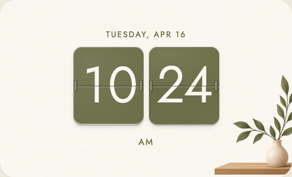
What this loop caught
The first reviews rejected all three. They identified construction and silhouette problems, not merely insufficient polish: reversed hill overlap, a ball-terminal numeral mismatch, steep tall terrain, generic vase/shelf geometry, repeated leaves, weak AM hierarchy and uniform noise.
Fresh renders then exposed an unwanted diagonal plate band, hard landscape joins, missing wide AM and medium/full foliage collisions. Those rejections drove specific corrections. A written inventory was still fallible: direct reference comparison corrected Landscape’s closed-counter 4 even after peer validation. The reference image remained the authority.
Critic instructions and sequence · Production artwork provenance and exact prompts · Previously accepted Analog reconstruction
Landscape · inventory, independent validation and review record

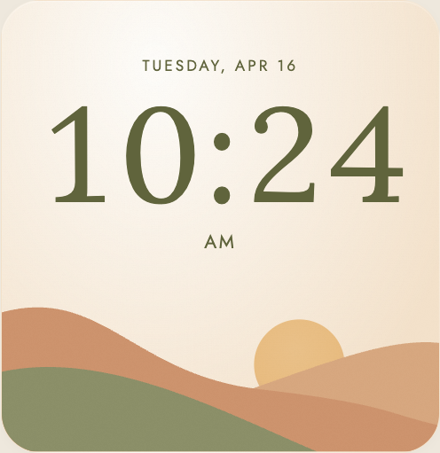
# Landscape final native-capture review
Inspected current/classic-{minimum,wide,medium,tall,strip,full,near-square}.png individually at native size, then re-opened the isolated approved top-middle concept review evidence: skylit-landscape-target-validation.png. No source or implementation description used. Acceptance was independently assessed, not presumed from the earlier verdict. Target `4` is the corrected closed-counter interpretation.
## Final gates
**Fidelity: PASS with recorded smaller deviations.** The final captures retain refined contrast-serif numerals, dark olive figure/ground, warm matte sky, right-offset circular golden sun near numeral height, correct terracotta-over-light-right-hill ordering, partial green foreground, and broad rounded clipping. No structural or principal glyph discrepancy requires rejection. Date prominence is somewhat stronger in minimum/medium/full, and the material remains coarser/smoother than the approved pigment treatment.
**Responsive composition: PASS for all seven reviewed shapes.** No time clipping, land/type collision, stretched sun, internal vertical terrain cut, or visually oversized tall hill mass is present. The tall composition is airy, and wide/strip expose a smaller sun arc; these are permissible adaptations. This verdict covers synthetic capture appearance only, not actual-frame behavior or exterior shadow that lies outside the cropped image.
## Evidence for the final sizing assessment
- **Sun/type relationship holds:** full disk diameter is roughly .9–.95× visible numeral cap height throughout the seven captures. Minimum is around .85–.9×. For example, medium numerals are about 51–52 pixels tall and disk about 48; full numerals about 121–123 and disk about 114; near-square numerals about 106–108 and disk about 98–100. This matches the target's roughly .9–.95 relationship rather than producing a tiny icon or a giant scene object.
- **Glyph forms hold:** the `2` has a plain slender upper terminal, not a conspicuous ball; `1` and `4` have thin feet; `0` is a tall contrast-stroke oval; `4` has the target's closed triangular counter. Round colon dots remain within numeral height. No visible anisotropic numeral deformation.
- **Time is smaller in some adapted shapes, but still the primary readable information:** minimum cap height is about 35 pixels; medium about 52; full about 122. Medium's full weekday/date line is roughly equal in overall width to the time, and its capitals are around one quarter of time cap height, versus nearer one seventh in the square target. Full also has stronger date proportions. This weakens the exact target hierarchy but does not create ambiguity or competition at the level of letter height/visual mass. Near-square date-to-time width relationship is close to the target.
- **Scene prominence remains restrained:** tall has about 85–90 pixels of land height versus roughly 60 of numeral cap height, close to the target land/time height ratio. Wide/strip hills start smoothly from the bottom rather than expose their illustration bounds. Green meets bottom before the right edge, with terracotta visible beyond it.
## Final inventory status
P present; W weakened. No defining feature is missing or contradicted in these captures. W does not automatically indicate a blocking discrepancy.
| Defining relationship | Final status | Evidence / limit |
|---|---|---|
| Upright contrast-serif time and aligned digits | P | All seven remain refined serif clocks. |
| Fine feet, plain `2` terminal, oval `0`, closed `4` | P | Correct principal glyph construction visible at native size. |
| Round colon dots | P | Two filled circular dots, no bar/dash substitution. |
| Dark olive type anchors warm sky | P | Strongest high-contrast figure in each capture. |
| Tracked uppercase secondary labels | P | Legible date and AM, inline where constrained. |
| Exact secondary-to-time hierarchy | W | Date relatively larger in minimum/medium/full; time still dominates. |
| Warm peach/cream sky | P | Quiet warm field across type and scene. |
| Fine target pigment/grain scale | W | Candidate has broader cloudy land variation and smoother sky. |
| Broad rounded panel clipping | P | Scene meets rounded outer corners cleanly. |
| Explicit warm light rim / raised appearance | W | Restrained but faint rim; exterior cast shadow unassessable. |
| Diffuse matte lighting, no shine/rays/halo | P | No glossy material or photorealistic light effect. |
| Low rolling three-layer land | P | Broad terrain in regular shapes and low amplitude in tall. |
| Terracotta left sweep in front of pale right hill | P | Clear ordering and warm color separation. |
| Green limited to lower left, warm lower right | P | Green meets bottom at approximately seven tenths in regular shapes. |
| Circular sun comparable to numeral height | P | Approximate .85–.95 ratio across captures. |
| Sun behind slopes and offset right | P | Lower disk occluded by terrain, no side clipping. |
| Continuous side-scene joins, no inner frame/footer | P | Wide/strip enter from bottom through smooth curves. |
| Type clear of scene and balanced asymmetry | P | No overlap/collision; tall uses a broad sky gap. |
| No invented scene objects | P | No plant/cloud/house additions. |
## Per-shape final result
| Capture | Responsive result | Remaining departure |
|---|---|---|
| Minimum 240×142 | Pass | Smaller clock/date hierarchy is less emphatic than target; compact date and inline AM are appropriate. |
| Wide 496×194 | Pass | Right scene and left type are allowed; visible sun is a lower arc. |
| Medium 496×300 | Pass | Date width nearly equals time width; date is relatively larger than target. No collision or legibility failure. |
| Tall 240×616 | Pass | Large sky interval before low terrain is airy but coherent; type and sun remain proportionate. |
| Strip 1008×142 | Pass | Shallow terrain and reduced sun exposure are acceptable at this height. |
| Full 1008×616 | Pass | Date relatively prominent; broad cloudy surface variation most evident here. |
| Near-square 496×542 | Pass | Closest direct target comparison; text stack remains modestly higher and time slightly smaller relative to card height. Correct disk/time scale and scene relationships. |
## Remaining smaller deviations
The target uses finer pigment/grain than the candidate's broad soft blotches. Candidate sky is slightly more cream/yellow and smoother than the target's peach mottling. The rim is faint. Near-square stack is modestly higher than the target, with AM-to-land clearance around .07–.08 card height rather than roughly .06; it does not produce an excessive void. Some adapted date proportions are stronger than target, as quantified above. These should be recorded honestly rather than calling the result pixel-identical.
**Accept the reviewed final Landscape candidate.** No further visual revision is required to resolve a consequential discrepancy. Device verification and any unseen surrounding panel shadow remain outside this review.
Flip · inventory, independent validation and review record

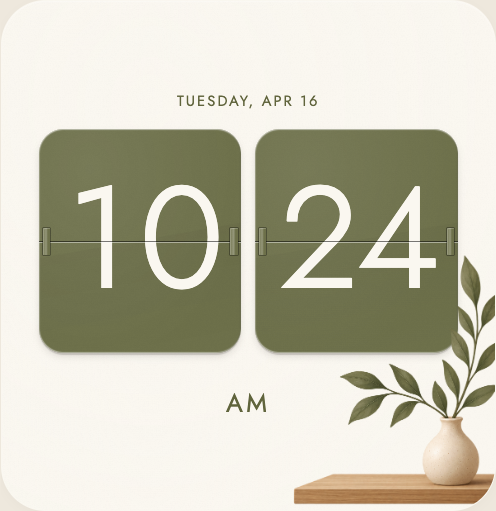
# Flip — candidate capture review 5
Scope: direct inspection of the approved **top-right Flip** concept, locked cross-validated inventory, all seven native-size `stacked-{minimum,wide,medium,tall,strip,full,near-square}.png` captures and `stacked-sizes.png` in `current/`. No source or implementation descriptions inspected. This is an absolute target comparison; no improvement credit or numerical score is assigned.
**Fidelity gate: PASS. Responsive composition gate: PASS for the seven supplied captures.** No remaining consequential visible mismatch prevents acceptance. The plates have a coherent shallow edge/face/seam/hinge construction without a legible diagonal face band. The corner arrangement retains the defining plant growth, ceramic profile/contact and wood planes. Smaller differences from the reference are listed explicitly below.
## Defining-detail audit
| Characteristic | Status | Native-size evidence |
|---|---|---|
| Two independent portrait olive plates and narrow air gap | Present | Background is visible between the rounded bodies and inner hinges. No shared casing, connecting axle, or colon. Tall uses a permissible vertical sequence. |
| Centered dominant pair and quiet upper space | Present | Near-square pair is centered, approximately .84 panel width and .44 height. Date fits above it as secondary functional information. Medium/full/wide remain optically centered rather than pushed to a side by decoration. Different aspect ratios are legitimately recomposed. |
| Rounded corners with straight side/top runs | Present | Plates remain shallow rounded rectangles with portrait aspect. No pill shape or excessive extrusion. |
| Fine perimeter and shallow inner-edge construction | Present | Near-square/full/tall expose restrained pale upper/side edge and narrow lower pale edge, with a darker inner/bottom transition. Edge, olive face and localized shadow remain separable; no thick white outline. Small versions retain the plate silhouette. |
| Soft related olive face material above/below seam | Present | Upper/lower faces stay in the same olive family. Subtle face variation stays subordinate. I cannot follow a hard geometric angled boundary or stripe across the face in full, near-square or tall; the defining surface reads as a quiet plate rather than a diagonal overlay. |
| Matte/satin impression and short diffuse cast shadow | Present | No glossy reflections or glass-like transparency. Shadows are local, soft and short, below the plate boundaries. Depth remains shallow. |
| Midline opening with fine dark/light pairing | Present | Continuous dark upper/pale lower seam crosses digits at shared horizontal pair height, stays far thinner than numeral strokes and does not displace glyph halves. Stacked plates independently preserve the same construction. |
| Small vertical rectangular olive edge hinges | Present | Native full/near-square/tall show short olive components with dark/pale local shading. They attach at the seam ends, remain small relative to face and leave gap air visible. No brass-colored bars, circles, rivets or elaborate mechanism. |
| Cream regular sans numerals with breathing room | Present | Digit height remains about half tile height; clear counters, moderately regular strokes, and cream fill. No conspicuous outline, heavy letter shadow or texture-filled counters. |
| Flagged `1`, tall oval `0`, curved/diagonal flat-bottom `2`, closed triangular `4` | Present, minor `1` difference | All glyph construction tests hold. `1` shoulder is somewhat shallower/wider than the reference's flag; closed `4` is correctly enclosed. No exact font family requirement is inferred. |
| Small tracked olive AM below pair | Present | Detached secondary label uses same olive family. It stays separate from date and plant. Tall gives it somewhat more relative size but remains secondary to numerals. |
| Permitted functional date remains subordinate | Present | Small tracked date above normal pairs; shorter APR 16 in minimum; beside pair in strip. It does not become a second dominant display row. |
| Quiet rounded ivory ground with restrained depth/light | Present, minor difference | Fine surface and pale broad field remain quiet, no coarse uniform noise or deep inset rectangle. Perimeter light/elevation is fainter than reference but does not flatten or reclassify the principal objects. |
| Plant rises on right with alternate growth and low leftward fan | Present | Near-square reach begins around y=.50, branches toward left near AM zone and continues upward beside the right tile. Full shows the same attached asymmetry; right clipping is coherent. Continuous stems enter vase opening. |
| Varied pointed curved leaves with broad/narrow turned faces | Present, minor broadness difference | Faces differ by width, angle and light/shade; there are visible branch gaps. Tall narrow leaves and low broader left-facing blades preserve the directional silhouette. Some low blades are broader than the reference, but not repetitive identical ellipses or a symmetric bouquet. |
| Directional central veins and leaf curvature | Present | Main veins remain inside leaves and follow their axes. Olive variation models face turns instead of a single flat leaf color. Subsidiary vein count/anatomy is deliberately not mandatory. |
| Narrow-neck pale pear/ovoid ceramic vase with small lip | Present | Neck, shoulders, rounded belly and compact base are distinguishable. Fine warm speckles, soft highlight toward left and right/base shade establish ceramic volume. No conical pot or cylindrical substitute. |
| Vase/wood contact and stem origin | Present | Stems disappear into neck, vase base rests on shelf top with local contact shadow; no gap or stem start on the body face. Vase occludes lower stem roots and rear shelf plane coherently. |
| Wood shelf top/front planes and shallow thickness | Present | Oblique/receding top quadrilateral, crisp front-left corner and darker vertical front face are readable. Fine horizontal grain is directional and subordinate. Right/lower clipping follows panel boundary. |
| Clear figure–ground and hierarchy | Present | Plant does not cross digits, hinges, AM or date. Time remains the principal object, AM secondary and corner arrangement decorative. Near-square foliage approaches the right tile edge closely but stays visibly separate. |
There are **no defining features judged missing or consequentially contradicted** in this candidate. Texture/substrate, precise hinge mechanism, botanical species and exact vase lip remain the inventory's uncertainties, not newly invented acceptance requirements.
## Smaller remaining deviations
- Numeral `1` upper flag is flatter/wider than target. Regular sans glyph family, plain lower stem, numeral proportions and the closed `4` remain correct.
- Several left-fanning leaves are a little broader and less slender than reference. Attachment, curved direction, differing face widths, tonal curvature and central veins are intact.
- Panel has fainter broad tonal/elevation modeling than the reference; tile material is also quieter/less mottled. These do not remove visible face/edge/shadow separation or introduce a contradictory material treatment.
- Near-square pair starts around .25 panel height rather than reference .21; functional date accounts for the occupied upper area. Tiles remain dominant and AM stays secondary. Exact square coordinates are not compulsory.
- Near-square shelf is slightly broader relative to panel and vase slightly fuller than target. Both retain the required plane/profile/contact relationships. Tall AM is somewhat larger relative to numerals.
These deviations are below the consequential fidelity threshold. They are recorded as bounded differences, not withheld approval or a request for an endless refinement loop.
## Responsive gate
| Supplied shape | Result | Evidence |
|---|---|---|
| Minimum, 240×142 | PASS | Time, compact date, AM fit; no clipping or collision; omission of corner decoration permitted. |
| Wide, 496×194 | PASS | Pair/date/AM fit and remain readable; cropped edge plant stays clear. |
| Medium, 496×300 | PASS | Time dominates, date secondary; corner construction and AM have clearance. |
| Tall, 240×616 | PASS | Stacked hours then minutes read in order; date above and AM below fit. Omitted ornament permitted. |
| Strip, 1008×142 | PASS | Date is beside compact pair, AM beneath; no overflow or collisions. Small physical-frame reading still requires actual frame viewing. |
| Full, 1008×616 | PASS | Centered pair and complete corner construction fit with clear figure–ground. |
| Near-square, 496×510 | PASS | Pair dominates, secondary date/AM fit and foliage remains outside right tile. |
This acceptance is for visual fidelity and supplied **static light-theme captures**. It is not a claim about refresh/animation, other digit strings, dark-theme contrast, touch targets, arbitrary dimensions or actual frame deployment. Those require their own verification.
**Decision: accept this candidate's visible Flip fidelity and supplied responsive compositions.**
Botanical · inventory, independent validation and review record

# Botanical final visual review I inspected all seven native images and `digital-sizes.png` in `current/`, then all **12 individual native medium theme images** in `themes/`. I reopened the approved concept sheet’s **bottom-left Botanical** panel and compared against its independently validated, locked reference inventory. No source or implementation descriptions inspected. Acceptance was reassessed from the pixels; no improvement credit is assigned. ## Independent gates - **Reference fidelity: PASS with bounded deviations.** Sturdy broad serif time, separate olive secondary type, varied attached five-leaf sprig, quiet diagonal field, cream material and clean figure-ground retain the specific concept. - **Responsive shape presentation: PASS for all seven supplied native shapes.** All retained information is readable and ranked; AM is present in every shape; foliage is complete where retained; no time/leaf collision or hanging secondary wash fragment is visible. - **Theme presentation: PASS for the 12 supplied medium light/dark variants.** Every date/time/AM remains clearly distinguishable from its panel/wash; leaf silhouettes and internal turns remain visible; ornament stays subordinate. This is a visual assessment, not measured numerical contrast certification. ## Defining-feature accounting against the target | Feature | Status | Final visual finding | |---|---|---| | Primary broad sturdy rust serif numeral mass | Present | Strong flag/foot on `1`, tall broad oval zero with moderate stroke contrast, curved `2` with broad baseline, open `4` with substantial crossbar/foot. Rust dominates the Linen/light reference composition. The `2` upper terminal is rounder/more bulb-like than the target, a bounded nuance. | | Large integrated round colon | Present | Round filled dots fit numeral color and mass; no tiny punctuation or segmented substitution. | | Small thin tracked uppercase secondary date | Present | Two rows in roomy forms, lateral/one-row or reduced date in constrained forms. Its weight remains below time and AM. | | Separate identifiable AM, larger than date in roomy layouts | Present | AM is visible in all seven shapes. Medium/near-square/full/tall retain the intended secondary ranking rather than making AM either a tiny footnote or a time-sized competing label. Wide/strip/minimum adjacent placement is a permitted constraint adaptation. | | Generously soft corners, cream matte field, diffuse material | Present | Rounded transitions, quiet perimeter, subtle broad tonal variation and lack of bevel/gloss retain the target’s material role. Native crops limit external-shadow verification. | | Pale asymmetric diagonal wash; largely inset comparable card | Present, regularized | The wash is subdued, oblique and inset in near-square. It is more regular and narrow than the reference’s fuller organic unequal-lobed contour. Exact lobe count or transparency is not established by the target, so neither is required. | | Secondary lower/right warm area behind sprig meeting panel edges | Present | Retained-branch shapes have a subordinate lower/right field reaching bottom/right behind stems. Tall has continuous bottom attachment; no hard mid-height hanging cutoff. | | Coherent lower-right branch entry | Present | Thin lines converge naturally to the lower/right boundary; no vase/base/shelf or disconnected blades. | | Five broad varied leaves with asymmetric tips/turns | Present | Tall terminal, narrow right, smaller up/left middle, broad sweeping left and lower down/left blades differ in size and direction. This matches the target’s directional variety rather than repeated rotated teardrops. | | Curved attached main stem and petioles | Present | Curves physically enter leaf bases, with open spaces between blades and no rigid radial hub. | | Fine contained veins and varied olive surfaces | Present, more articulated | Veins follow each blade and remain subordinate to silhouette. Larger leaves have stronger surface modeling than the target, but no shiny highlights or raised-object shadows. | | Palette/surface roles and layer order | Present | Linen/light carries cream/pale warm wash/olive/rust roles. Other themes adapt the text/wash colors coherently. Wash stays behind text/foliage; decorative richness remains quiet. | | Clear text/foliage separation and asymmetric balance | Present | Cream/dark panel space visibly separates numeral footprints from upper blades at coexisting rows. AM/date are clear. The lower-right sprig balances left type without covering it. | ## Shape gate — every native capture | Shape | Assessment | |---|---| | Minimum, 240×142 | Time/APR 16/AM readable, separated and uncut. Branch omission is a sensible constrained simplification. | | Wide, 496×194 | One-line date, large time and adjacent AM visible. Small retained sprig is complete and clears AM/time. | | Medium, 496×300 | Two-row date, primary time, meaningful below-time AM. Upper branch leaf remains outside the `4` footprint with visible background separation; all blades complete. | | Tall, 240×616 | Stacked date/time/AM readable with restrained AM hierarchy. Complete broad bottom sprig, continuous wash edges and no floating mid-panel patch. | | Strip, 1008×142 | Time primary; adjacent AM and date readable. Omitted sprig is appropriate. Narrow wash remains pale and secondary. | | Full, 1008×616 | Date/time/AM maintain a clear hierarchy, including AM visibly larger than date. Terminal blade and last-digit foot have a clean gap; lower/right foliage is complete. | | Near-square, 496×510 | Strong direct identity match: broad serif time, separate AM, cream margins, varied attached lower-right sprig and soft corners. No collision/clipping. | Exact square coordinates, one mandatory branch footprint, all decoration in narrow shapes, and a fixed type-to-leaf pixel gap are not required. Every retained principal contour is intentional and complete in the supplied views. ## Theme presentation gate — all 12 native medium images | Theme variant | Text/wash and foliage assessment | |---|---| | Linen light | Rust/olive text distinct against cream and faint tan wash; olive leaf silhouettes clear and subordinate. | | Linen dark | Peach numerals and pale olive date/AM stand clearly on brown-charcoal field/wash. Leaf blades readable; thin stems are quieter but remain attached. | | Sage light | Dark green text separates from pale green wash and cream ground. Olive blades remain distinct without becoming the focal mass. | | Sage dark | Pale green text clear over deep green ground. Blades/turns visible; finer olive stems subdued but coherent. | | Stone light | Slate-green text clearly separates from pale gray-green wash; foliage is a restrained warmer accent. | | Stone dark | Pale gray-green text readable over dark cool field. All five leaves readable; fine veins quieter than light mode. | | Ocean light | Blue text and faint blue wash remain distinct; olive foliage provides warm counterbalance without touching text. | | Ocean dark | Pale blue time/date/AM distinct against deep blue-charcoal field. Foliage silhouettes and local modeling remain readable; no merged numeral/leaf edge. | | Plum light | Muted purple text remains legible on pale plum/cream field; warm olive branch remains balanced and secondary. | | Plum dark | Pale pink-purple text clear on deep plum wash/ground. Foliage retains blade variation and separation; no bright competing decoration. | | Contrast light | Very dark olive text stands strongly on near-white/pale green field. Wash remains lighter; leaf detail remains contained. | | Contrast dark | Pale yellow-green text has strong visual separation from near-black/deep green field. Wash stays restrained; blades/attachment remain readable. | No variant shows washed-out secondary text, a wash dominating the numeral mass, foliage merged into text, clipped blades, or a theme-specific balance blocker. Theme-specific blue/purple/slate replacements are judged as theme adaptation, not as failure to keep the Linen reference’s literal rust color everywhere. ## Bounded remaining deviations 1. Major wash is more elliptical/narrow/regular than the target’s fuller organic silhouette. It retains low contrast, diagonal organization and cream breathing room in the comparable card. 2. Larger foliage has stronger modeled shading and more articulated veins than the approved reference. The natural broad varied silhouettes remain the governing feature. 3. `2` has a rounder upper terminal. Overall broad sturdy serif character is intact. 4. Wide/full use a smaller branch relative to the time than the square concept; tall/strip reshape the wash substantially. These are visible recompositions within the approved responsive scope. 5. Dark-mode thin stems and subsidiary veins are quieter than in light mode, but principal leaf silhouettes, turns and attachments remain legible. These are bounded visible differences, not consequential blockers in the supplied evidence. The result retains Botanical identity and readable, balanced presentation; it is not a claim of pixel-identical reconstruction. ## Precise acceptance scope Acceptance covers the **seven supplied synthetic 10:24/APR 16 native shape images** and the **12 supplied medium theme images**, plus their contact sheet for cross-shape balance. It does not cover every possible time/date content, runtime resizing/theme transitions, physical frame output, numerical accessibility ratios, interactive behavior, household configuration, or full-dashboard/exterior shadows. No source/runtime test result is implied by this read-only visual review.
Final Settings preview review
A final full-screen inspection caught a Botanical AM label clipping in the Settings sample. Its percentage padding was based on the wider form, and newly loaded font metrics were not remeasured. The sample now uses its own measured width, font loading triggers sizing again, and rendered acceptance checks explicitly enforce AM/PM bounds in Settings. The independent critic then rejected a remaining M/leaf contact; reducing the sprig in this wide sample clears the label.
Rejected preview evidence
Original clipped AM
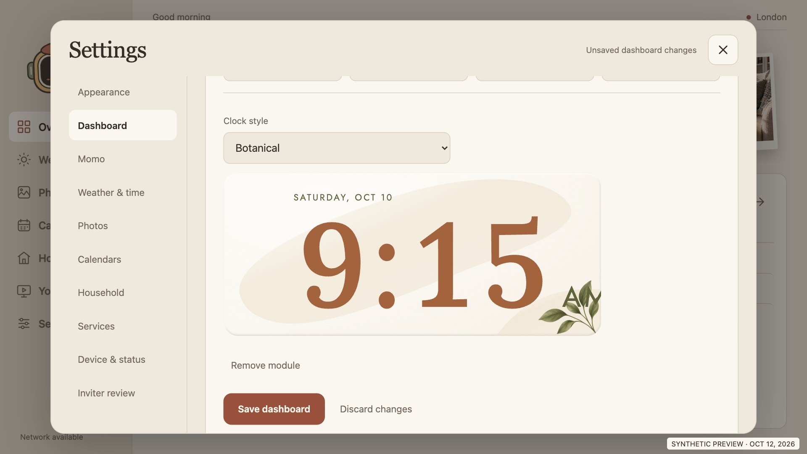
First correction: M touches a leaf
Verified scope and delivery
- 84 JavaScript tests and 16 Python/native-policy tests pass.
- 76 rendered clock groups pass, including local font/art decoding, 12/24-hour and city time, staged settings persistence, responsive bounds with large text, explicit AM/PM visibility, Analog seconds and Flip motion/cancellation.
- 32 full-app groups pass across landscape and narrow preview sizes. Runtime-error and retry counts are recorded in the linked manifests.
- Analog’s seven current shape captures are byte-identical to its accepted 2.15.5 captures. Its reconstruction is preserved.
- Normal signed APK 2.15.6/code 34 verifies with v1/v2/v3 signatures; blank household configuration, local production art/fonts, no synthetic fixture.
- Public source/history/APK checks and Gitleaks passed.
- Paired TLS frame remains unavailable. No device installation or settings change occurred; physical WebView 95 appearance/performance remains pending.
Clock checks and captures · Full-app checks and captures · Native crop dimensions
APK: dist/skylit.apk
SHA-256: 965d37f3f35b924b953684903ddbd8f51c4c583c0f69db439e6827babd244964
The signing configuration is preserved for upgrades. Critics reviewed seven Linen shapes and twelve medium themes per clock; device testing and other size/theme combinations are not certified by those visual reviews.